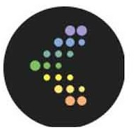

reversefuture
这是二级标题
大漠孤烟直，长河落日圆
尘世中没有哪一方净土能让人随心所欲，理想与现实总有太大的距离。如果差距太远，落差太大；如果所处的环境差强人意，总被疏忽，总有伤害；如果病魔缠身，爱人离弃；如果生活中太多是灰暗。坚强，就是生命的支撑。
On Friendship And a youth said, "Speak to us of Friendship." Your friend is your needs answered. He is your field which you sow with love and reap with thanksgiving.
Seek him always with hours to live. For it is his to fill your need, but not your emptiness. And in the sweetness of friendship let there be laughter, and sharing of pleasures.
For in the dew of little things the heart finds its morning and is refreshed.
